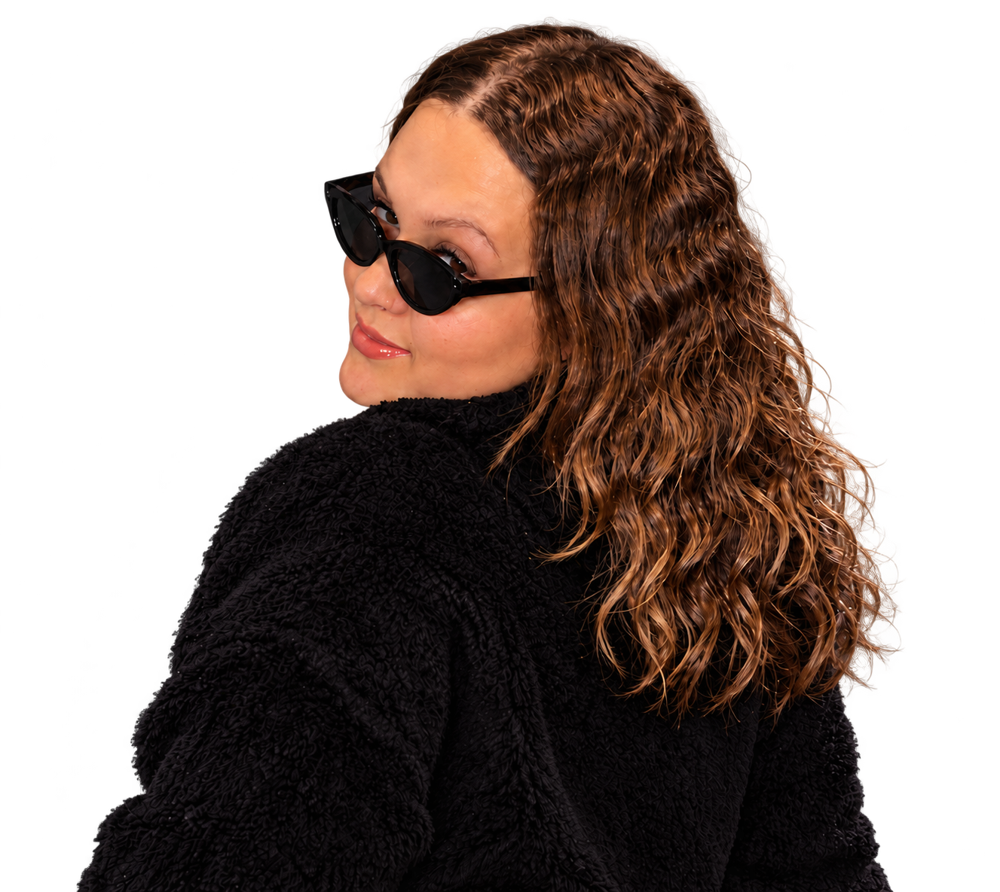
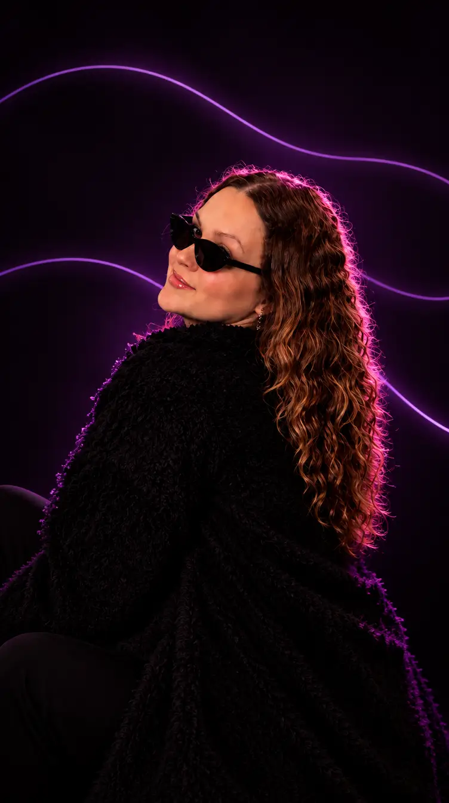
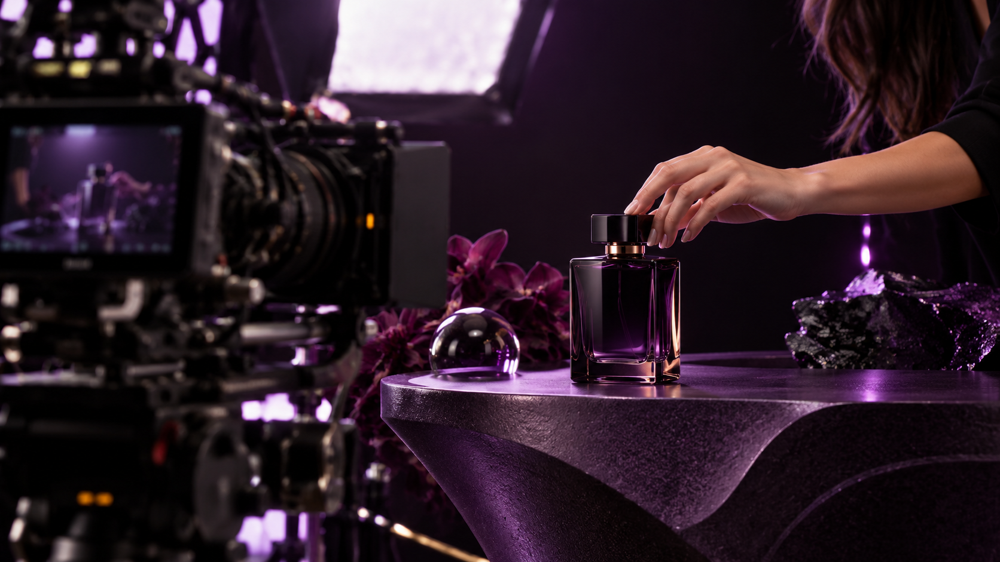
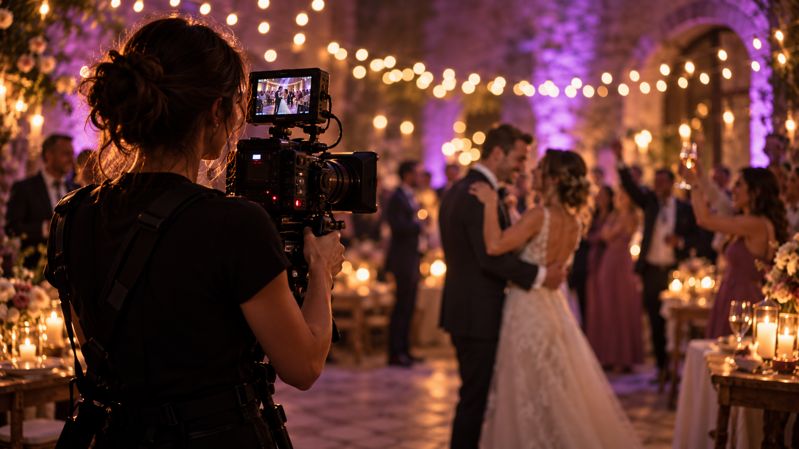
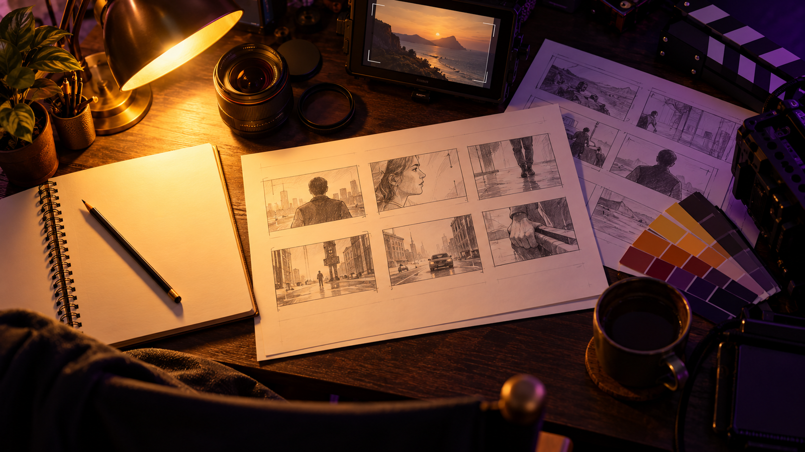
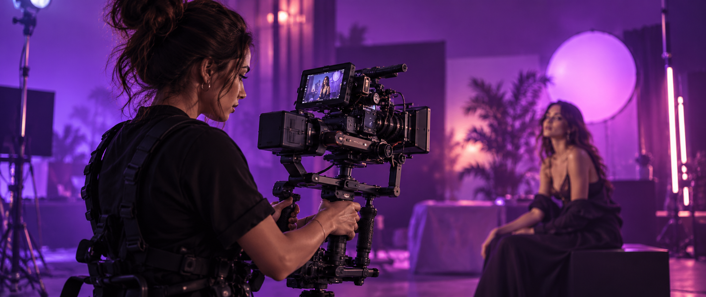
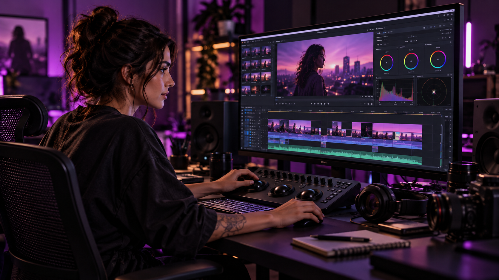
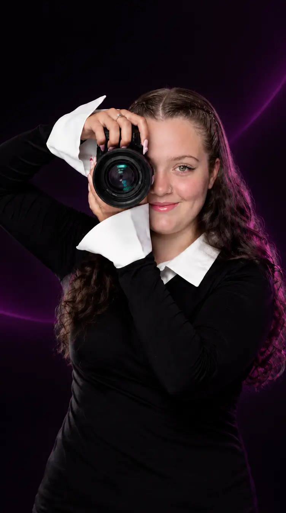

PORTFÓLIO

Que minha câmera registre o que meus olhos enxergam, em Deus.
Histórias
em movimento.
Um olhar, muitas formas de contar.
Deixe as imagens falarem.
Em destaque
Seleção visual do portfólio. Os vídeos e os detalhes dos projetos serão adicionados em breve.

Criar e contar
o que importa.
APRESENTAÇÃO EM CONSTRUÇÃO
Aqui você vai conhecer a trajetória, as inspirações e o olhar de quem está por trás da câmera.
Texto provisório. A apresentação e as informações profissionais serão preenchidas com a cliente.
CONHEÇA O PROCESSOSua ideia, em cena.
Diferentes formatos.
A mesma atenção ao olhar.


O escopo de cada produção será definido com a cliente.
Da ideia ao último frame.

Briefing
O ponto de partida: a ideia, a mensagem e o objetivo do vídeo.
Planejamento
Referências e organização para transformar a ideia em imagens.

Captação
A história ganha forma pelo enquadramento, pela luz e pelo movimento.

Edição e entrega
As cenas se encontram na montagem e no formato final do vídeo.
Depois
do play.
O espaço de quem faz parte
dessas histórias.
Antes de
começar.
Algumas perguntas,
para a próxima conversa.
Quais tipos de vídeo posso encontrar aqui?
O portfólio está organizado em vídeos para marcas, eventos e redes sociais. O escopo de cada serviço será confirmado com a cliente.
Como começa um projeto?
A estrutura proposta passa por briefing, planejamento, captação e edição e entrega. Os detalhes de cada etapa serão alinhados para cada projeto.
Qual é o prazo de entrega?
Informação a confirmar com a cliente. O prazo real precisa considerar o formato, o escopo e as necessidades da produção.
Como solicitar um orçamento?
Os canais oficiais de contato serão adicionados à seção “Vamos conversar”. Valores e condições serão informados pela profissional.
Em quais locais são feitas as gravações?
Área de atendimento a confirmar com a cliente. A localização e a disponibilidade para deslocamentos ainda não foram informadas.

Toda história começa
com uma ideia.
Uma marca, um evento, uma nova história.
Qual é a sua próxima cena?
Canais oficiais aguardando confirmação da cliente.